Walks through the exact content-security-policy tradeoffs that forced ChatGPT and Claude to nest one iframe inside another to render third-party MCP app UI safely
The talk frames the double iframe as the fix that survives every single-iframe failure mode, tracing the pattern back to Facebook app marketplace precedent (ours).
“Views are always rendered as a result of a tool call. So if your server exposed multiple tool to be used, you can actually add metadata on some of them”
said at 02:03“the iFrame that you are spawning up is sharing the same origin and sharing the same therefore CSP as the host that is responsible for”
said at 07:18“you are sharing same origin as your parent DOM. So the loaded iFrame scripts would be able to access local storage or cookies that are indexed by origin”
said at 07:48“the only way to actually provide an origin to a sandboxed iFrame is to put allow same origin, which is an additional attribute that”
said at 09:09“it would require open AI to modify the another CSP directive, which is basically the frame source directive listing all domains that are allowed to”
said at 10:03“you want app ABC123 not to be able to access local storage from app ABC456 for example”
said at 12:56“actually the first time this solution was implemented was back in Facebook days when they released their app marketplace”
said at 13:39“declare all domains your application depends upon inside the provided metadata in the MCP app spec so that you are sure that they will be rewritten correctly”
said at 14:29“we've seen a lot of rejection coming from chat GPT app store submission because of missing CSP and app not working in production because of”
said at 19:08The Facebook-app-marketplace lineage is a useful reminder that third-party-UI-in-a-trusted-host is an old problem with a known solution pattern -- worth watching whether MCP client vendors standardize a shared proxy-subdomain infrastructure rather than each host reinventing it (ours).
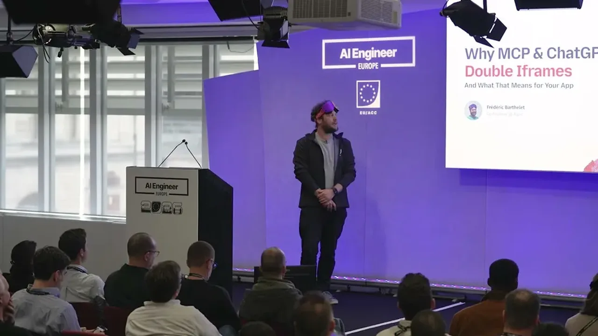
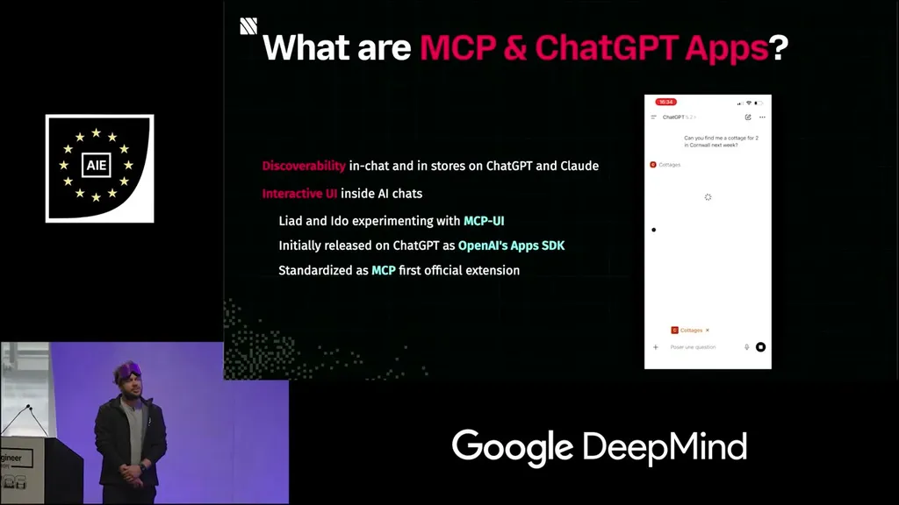
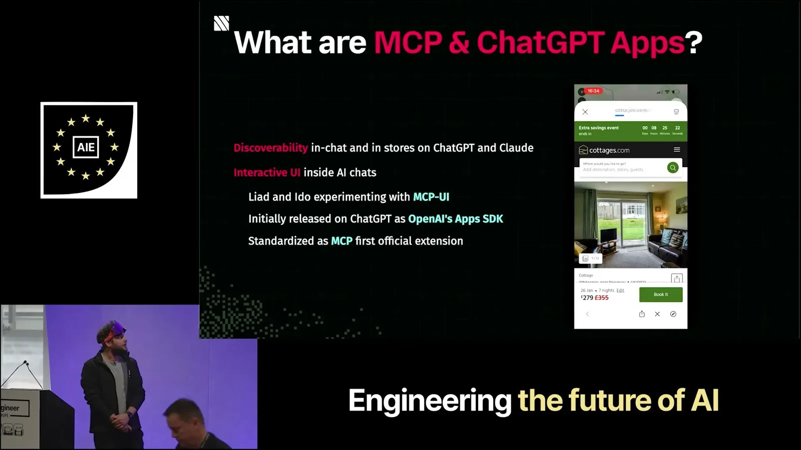
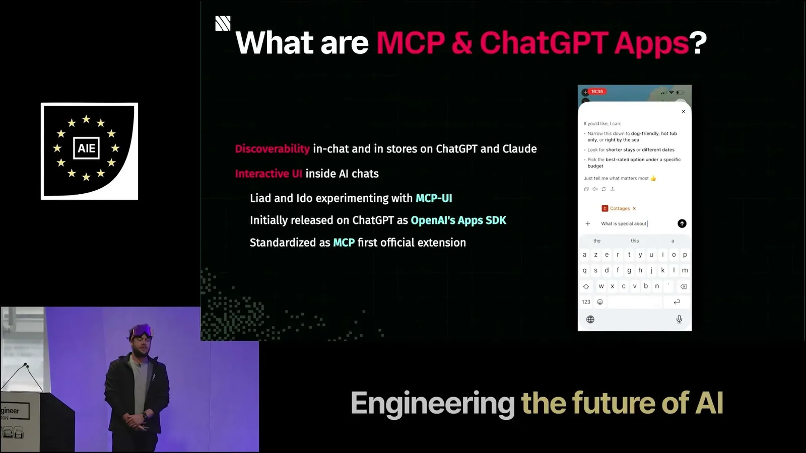
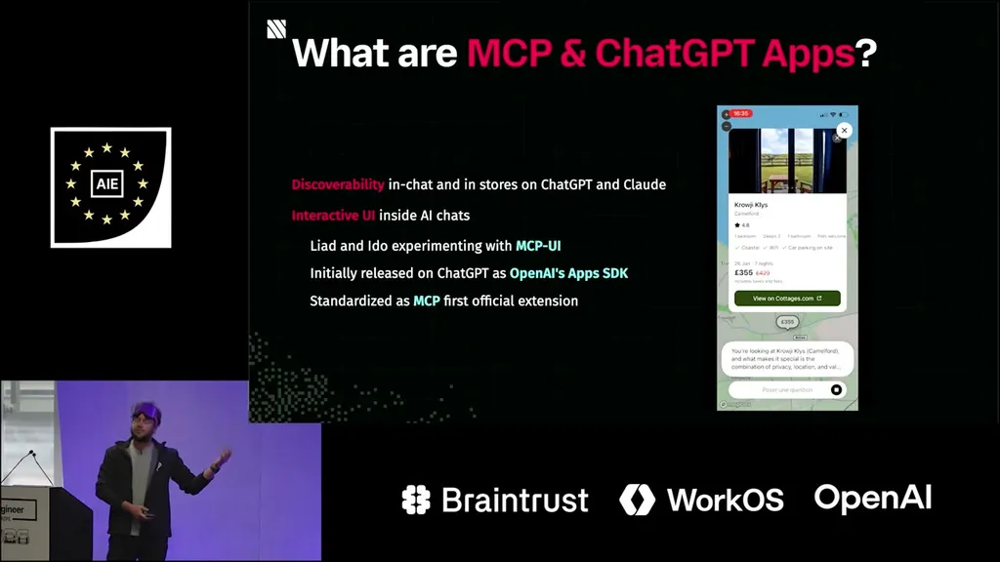
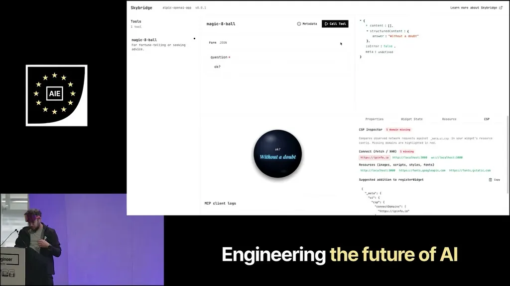
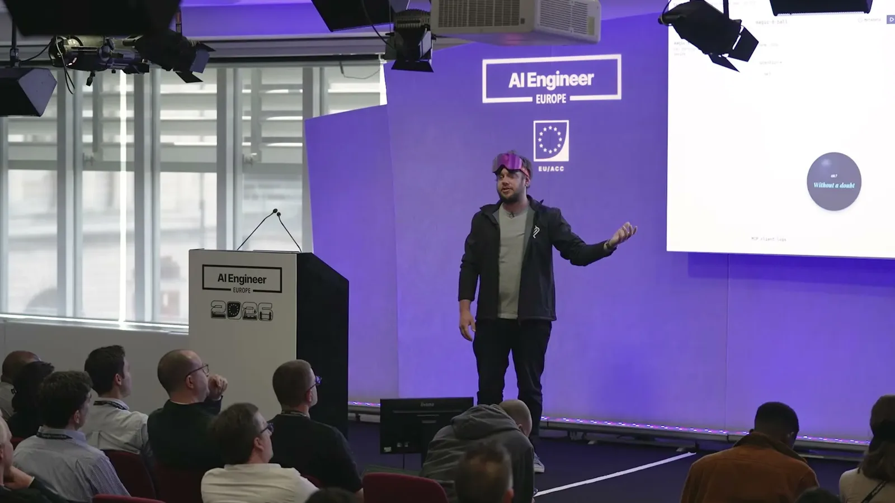
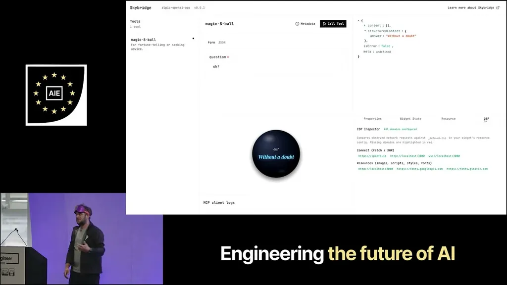
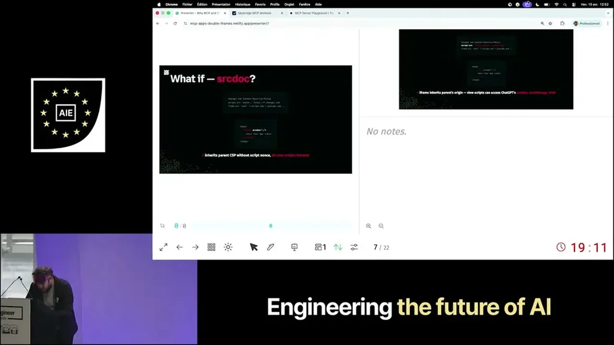
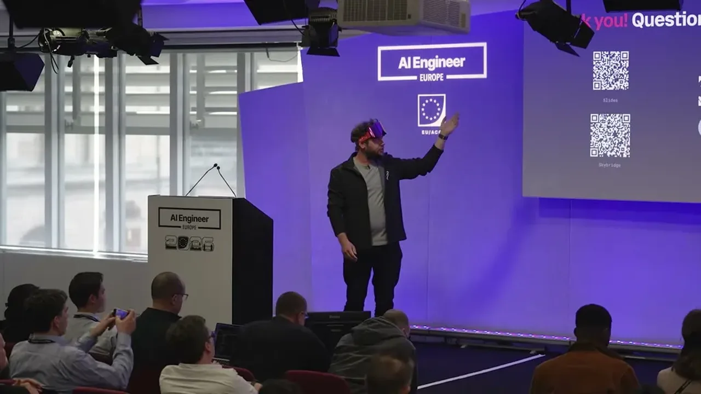
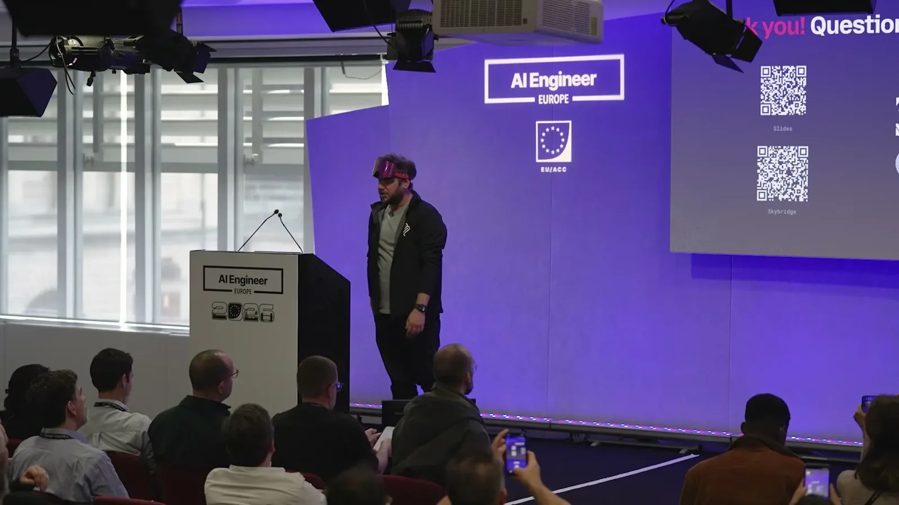
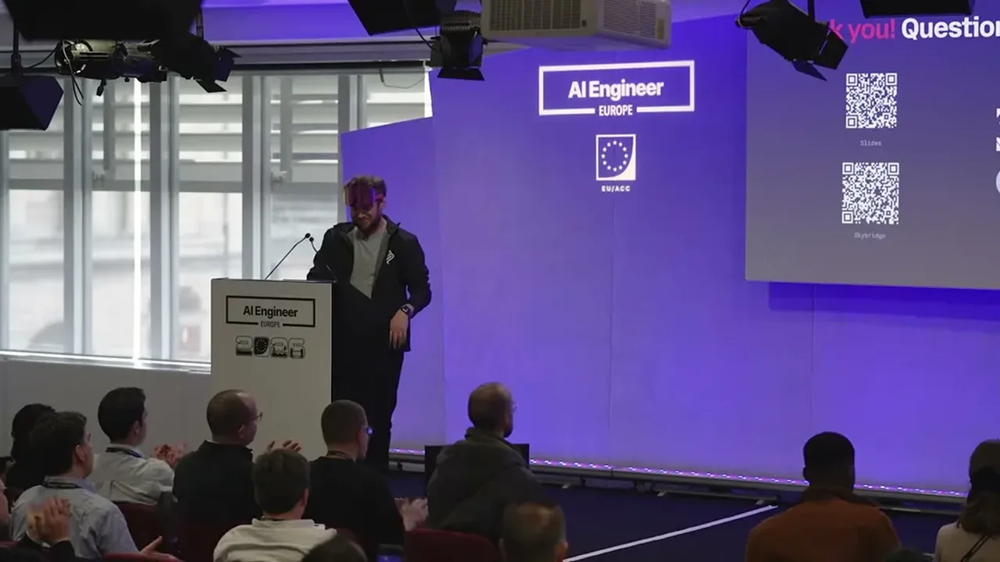
| Stance | Claim | t |
|---|---|---|
| asserts | MCP app views are always rendered as the result of a tool call, with UI metadata advertised at tool-list time. | 02:03 |
| warns | An iframe using sourceDoc shares the host's origin and CSP, so the host's script-src nonce policy blocks third-party app scripts from running. | 07:18 |
| warns | Relaxing the host CSP to let app scripts execute would let a same-origin script read the host's local storage or cookies and send them to a backend. | 07:48 |
| warns | Adding allow-same-origin to a sandboxed iframe to restore storage access recreates the original escape-the-sandbox problem. | 09:09 |
| warns | Using the src attribute to point directly at each app's server would require the host to add every new app's domain to its frame-src directive indefinitely, which isn't feasible. | 10:03 |
| recommends | Serving the same loader script on a unique subdomain per app isolates each app's origin so local storage and cookies don't collide between apps. | 12:56 |
| asserts | The double-iframe approach for rendering third-party UI is not new and was first implemented by Facebook's app marketplace. | 13:39 |
| recommends | App developers must declare every external domain their app depends on inside the MCP app spec metadata so it renders correctly inside the nested iframe. | 14:29 |
| warns | Missing CSP domains in app metadata are a common cause of ChatGPT app store submission rejections. | 19:08 |
Machine-readable copy embedded in this page (script#ontology) and in the corpus ontology.